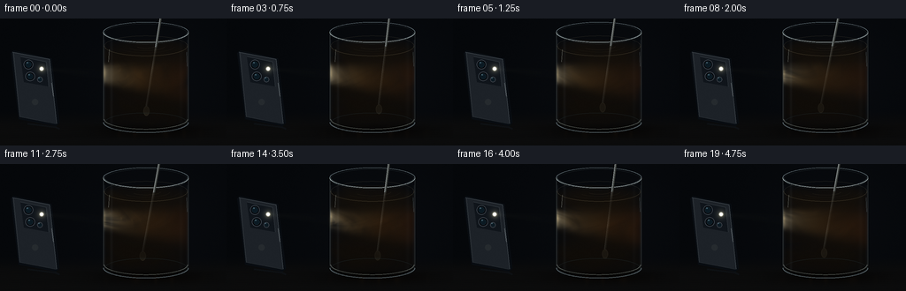
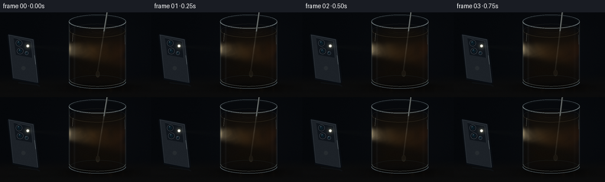
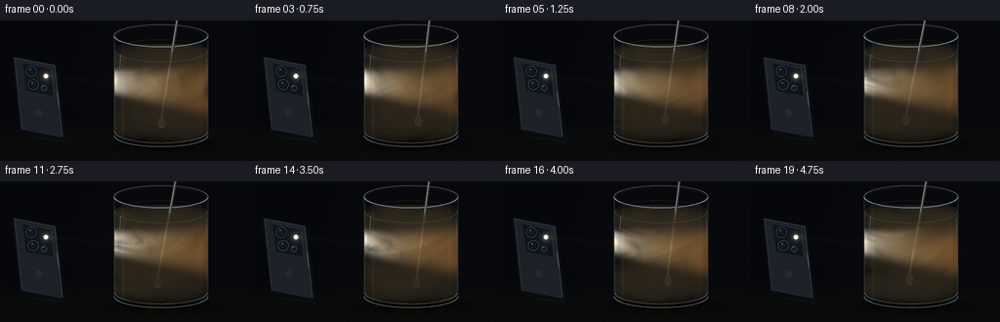
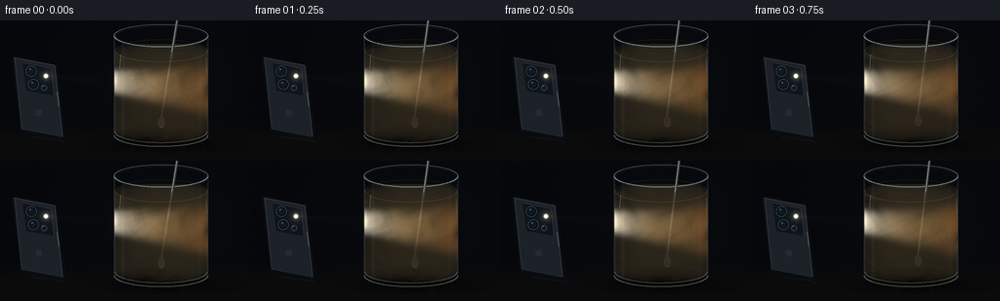

CODING AGENTS AS PIXEL WORLD MODELS
traex/GPT-6.1-Sol · phygen_049
点击播放 · 原生 RGB 像素
逐轮保存的候选
回放视频、检查图与代码变化。
每份候选均可单独播放。实际图片检查记录在下方工具轨迹中。
候选 01播放与检查图
点击播放 · 原生 RGB 像素


展开代码变化
--- 上一保存版本
+++ 本次保存版本
@@ -0,0 +1,220 @@
+"""Deterministic procedural glass / sediment / flashlight video renderer.
+Only numpy, Pillow and analytic optics are used; no external assets.
+"""
+from pathlib import Path
+import json
+import numpy as np
+from PIL import Image, ImageDraw, ImageFilter
+from artifact_io import save
+
+ROOT=Path(__file__).resolve().parent
+SPEC=json.loads((ROOT/'task_spec.json').read_text())
+W,H=SPEC['width'],SPEC['height']; S=3
+SW,SH=W*S,H*S
+rng=np.random.default_rng(1947)
+K=W/4.85; CY=1/np.sqrt(1+.25**2); CZ=.25*CY
+XC=.70; R=.91; BOTTOM=.13; TOP=2.08; WATER=1.78
+LAMP=np.array([-1.535,1.30,.10],np.float32)
+LD=np.array([1.,-.09,-.015],np.float32); LD/=np.linalg.norm(LD)
+
+def project(x,y,z=0):
+ return ((W/2+x*K)*S,(H/2-(CY*(y-.98)-CZ*z)*K)*S)
+
+def line(draw,pts,fill,width=1):
+ draw.line([(int(x*S),int(y*S)) for x,y in pts],fill=fill,width=max(1,int(width*S)),joint='curve')
+
+def ellipse(draw,box,fill=None,outline=None,width=1):
+ draw.ellipse(tuple(round(q*S) for q in box),fill=fill,outline=outline,width=max(1,round(width*S)))
+
+def ring(draw,y,r,colour,width=1,start=0,end=2*np.pi):
+ a=np.linspace(start,end,200)
+ pts=[project(XC+r*np.cos(q),y,r*np.sin(q)) for q in a]
+ draw.line(pts,fill=colour,width=max(1,int(width*S)),joint='curve')
+
+# A dim laboratory tabletop, subtle defocused background and warm reflected pool.
+yy,xx=np.mgrid[0:SH,0:SW].astype(np.float32); xx/=S; yy/=S
+noise=rng.normal(0,.0016,(SH,SW)).astype(np.float32)
+back=np.zeros((SH,SW,3),np.float32)
+back[:]=[.022,.030,.041]
+shade=np.exp(-((xx-173)/100)**2-((yy-64)/83)**2)
+back+=shade[...,None]*np.array([.012,.013,.016])
+floor=np.clip((yy-105)/17,0,1)
+back=back*(1-floor[...,None])+floor[...,None]*np.array([.046,.047,.048])
+back+=floor[...,None]*(.0018*np.sin(xx*.13+yy*3.2)+.0014*np.sin(yy*.6))[...,None]
+back+=noise[...,None]
+shadow=np.exp(-((xx-170)/57)**2-((yy-128)/7)**2)
+back*=1-.72*shadow[...,None]
+back=np.clip(back,0,1)
+
+# Pixel rays through the water cylinder, analytically clipped against the meniscus.
+x0,x1=111*S,224*S; y0,y1=24*S,133*S
+u,v=np.meshgrid((np.arange(x0,x1)+.5)/S,(np.arange(y0,y1)+.5)/S)
+wx=(u-W/2)/K
+plane_y=.98+(H/2-v)/(K*CY)
+rad2=R**2-(wx-XC)**2
+zr=np.sqrt(np.maximum(rad2,0))
+low=np.maximum(-zr,(BOTTOM-plane_y)/.25)
+high=np.minimum(zr,(WATER-plane_y)/.25)
+mask=(rad2>0)&(high>low)
+span=np.where(mask,high-low,0).astype(np.float32)
+N=44
+f=(np.arange(N,dtype=np.float32)+.5)/N
+Z=(high[None]-f[:,None,None]*span[None]).astype(np.float32)
+X=np.broadcast_to(wx.astype(np.float32),(N,*wx.shape))
+Y=(plane_y[None]+.25*Z).astype(np.float32)
+DX=X-XC
+RR=np.sqrt(DX*DX+Z*Z)
+step=(span/(N*CY)).astype(np.float32)
+# Source cone and distance through sediment, including cylinder entry intersection.
+VX=X-LAMP[0]; VY=Y-LAMP[1]; VZ=Z-LAMP[2]
+distance=np.sqrt(VX*VX+VY*VY+VZ*VZ)
+axial=VX*LD[0]+VY*LD[1]+VZ*LD[2]
+rho=np.sqrt(np.maximum(0,distance*distance-axial*axial))
+cone_radius=.022+np.maximum(axial,0)*.17
+cone=np.exp(-2.1*(rho/cone_radius)**4)*(axial>0)
+# Trace each line toward the phone to the curved near wall.
+nx=VX/distance; nz=VZ/distance
+bb=DX*nx+Z*nz
+aa=nx*nx+nz*nz
+entrydist=(bb+np.sqrt(np.maximum(0,bb*bb-aa*(DX*DX+Z*Z-R*R))))/np.maximum(aa,.001)
+entrydist=np.maximum(entrydist,0)
+light=cone*(2.7/(.7+distance*.55))
+phases=rng.uniform(0,6.28,7)
+
+# Fine, fixed sensor texture; changing motion is entirely the stirred fluid.
+sensor=rng.normal(0,.20,(SH,SW,1)).astype(np.float32)
+
+def phone(image):
+ d=ImageDraw.Draw(image,'RGBA')
+ pts=[(14,38),(56,46),(64,119),(22,111)]
+ # Thick rounded-edge device, shown from the rear, leaning against a low stand.
+ d.polygon([(x*S,y*S) for x,y in [(12,39),(15,36),(58,45),(67,118),(63,122),(21,114)]],fill=(9,13,18,255))
+ d.polygon([(x*S,y*S) for x,y in pts],fill=(29,34,40,255))
+ line(d,[(14,38),(56,46),(64,119)],(98,107,113,255),.6)
+ line(d,[(15,39),(22,111),(63,119)],(49,55,60,255),.7)
+ line(d,[(58,73),(60,88)],(113,120,124,180),.7)
+ # Satin rear finish and a recessed three-lens camera island.
+ d.polygon([(x*S,y*S) for x,y in [(23,43),(52,49),(55,77),(27,72)]],fill=(16,21,27,255))
+ line(d,[(23,43),(52,49),(55,77)],(62,70,76,255),.45)
+ for cx,cy,rad in [(32,52,5.2),(34,65.5,5.2),(45,69,3.1)]:
+ ellipse(d,(cx-rad,cy-rad,cx+rad,cy+rad),fill=(6,9,13,255),outline=(70,78,87,255),width=.55)
+ ellipse(d,(cx-rad*.62,cy-rad*.62,cx+rad*.62,cy+rad*.62),fill=(11,26,35,255),outline=(27,43,52,255),width=.4)
+ ellipse(d,(cx-2.0,cy-2.5,cx-.3,cy-1.2),fill=(98,133,148,150))
+ ellipse(d,(36,91,43,98),fill=(38,43,47,255))
+ line(d,[(31,119),(63,123),(67,125)],(14,17,20,255),2)
+ # The LED really coincides with the origin of the directed volumetric beam.
+ lx,ly=project(*LAMP); lx/=S; ly/=S
+ ellipse(d,(lx-2.5,ly-2.5,lx+2.5,ly+2.5),fill=(190,189,175,255),outline=(86,88,86,255),width=.5)
+ ellipse(d,(lx-1.6,ly-1.6,lx+1.6,ly+1.6),fill=(255,255,244,255))
+ return image
+
+def rod(image,t,above=False):
+ # The submerged stirrer follows a small orbit; the far handle is off-screen.
+ bx=XC+.13*np.sin(t*2.05); bz=.16*np.cos(t*2.05)
+ bottom=np.array([bx,.39,bz]); handle=np.array([1.05+.04*np.sin(t*2.05),2.63,.06])
+ cut=bottom+(handle-bottom)*(WATER-bottom[1])/(handle[1]-bottom[1])
+ a,b=(cut,handle) if above else (bottom,handle)
+ pa=project(*a); pb=project(*b)
+ d=ImageDraw.Draw(image,'RGBA')
+ d.line([pa,pb],fill=(43,45,43,255),width=round(2.5*S))
+ d.line([(pa[0]-.55*S,pa[1]),(pb[0]-.55*S,pb[1])],fill=(162,169,169,255),width=round(.7*S))
+ d.line([(pa[0]+.45*S,pa[1]),(pb[0]+.45*S,pb[1])],fill=(82,88,85,255),width=round(.6*S))
+ if not above:
+ px,py=project(*bottom); px/=S; py/=S
+ ellipse(d,(px-3,py-5,px+3.7,py+5.6),fill=(80,78,65,255),outline=(122,119,100,255),width=.6)
+ return image
+
+def render(t):
+ bg=back.copy()
+ # Reflected, gently evolving amber caustics beneath the curved vessel.
+ glow=np.exp(-((xx-172)/47)**2-((yy-130)/5.5)**2)
+ caustic=(.5+.5*np.sin(xx*.25+np.sin(xx*.09+t)*1.4+t*.7))**7
+ bg+=glow[...,None]*(.015+.019*caustic)[...,None]*np.array([1,.63,.28])
+ rgb=np.clip(bg*255,0,255).astype(np.uint8)
+ im=Image.fromarray(rgb); im=phone(im); im=rod(im,t)
+ bg=np.asarray(im,dtype=np.float32)/255
+ # Advect a broadband clay density field through a twisting 3-D vortex.
+ angle=t*(.84+.18*Y)+2.4*Y+1.65*np.exp(-RR*RR/.48)+.23*np.sin(Y*8-t)
+ ca=np.cos(angle); sa=np.sin(angle)
+ A=DX*ca-Z*sa; C=DX*sa+Z*ca
+ B=Y+.065*np.sin(A*5+C*3+t*.7)
+ field=np.zeros_like(A)
+ for j,(freq,amp) in enumerate([(3.1,.32),(5.7,.23),(9.2,.16),(14.1,.10),(23.7,.065),(35.4,.045),(55.,.018)]):
+ field+=amp*np.sin(freq*(A*.81+C*.57)+phases[j]+.8*np.sin(B*freq*.53+C*2)) * np.cos(freq*(B*.44-C*.39)+phases[-1-j])
+ # Rolled sediment ribbons and diffuse cloudy clumps, never opaque solid objects.
+ fold=np.sin(A*12+2.6*np.sin(B*5+C*4)+C*5)
+ wisps=np.exp(-(fold/.24)**2)
+ dens=np.clip(.64+field+.22*wisps+.16*np.exp(-((Y-.31)/.24)**2),.16,1.30)
+ # Mud strongly absorbs blue; the white shaft becomes champagne and ochre.
+ optical=entrydist*(.76+.30*dens+.07*np.sin(B*8+A*7))
+ illumination=light[...,None]*np.exp(-optical[...,None]*np.array([.90,1.35,2.13],np.float32))
+ ambient=np.array([.082,.061,.037],np.float32)[None,None,None,:]
+ ambient=ambient*(.78+.30*np.clip((Y-BOTTOM)/(WATER-BOTTOM),0,1))[...,None]
+ scatter=ambient+illumination*np.array([.57,.53,.43],np.float32)
+ alpha=1-np.exp(-dens*step[None]*1.33)
+ alpha*=mask[None]
+ trans=np.concatenate([np.ones((1,*mask.shape),np.float32),np.cumprod(1-alpha[:-1],axis=0)],axis=0)
+ col=np.sum(scatter*(trans*alpha)[...,None],axis=0)
+ endtrans=np.prod(1-alpha,axis=0)
+ # Volume's source radiance is compressed only where the entry shaft is bright.
+ col=col/(1+.23*col)
+ cropped=bg[y0:y1,x0:x1]
+ cropped[:]=cropped*endtrans[...,None]+col
+ # Cylindrical glass reflects the studio and the LED on both curved sides.
+ xn=(wx-XC)/R
+ front=np.sqrt(np.maximum(0,1-xn*xn))
+ glassmask=(rad2>0)&((plane_y+.25*zr)>BOTTOM)&((plane_y-.25*zr)<TOP)
+ edge=np.exp(-((np.abs(xn)-.981)/.025)**2)
+ strip=.032*np.exp(-((xn+.81)/.031)**2)+.013*np.exp(-((xn-.83)/.04)**2)
+ rimreflection=edge*.039+strip
+ cropped+=glassmask[...,None]*rimreflection[...,None]*np.array([.82,.92,1.])
+ # Bright horizontal scatter at the flashlight's impact, curved by the wall.
+ hot=np.exp(-((u-117.9)/1.7)**2-((v-62.7)/8.5)**2)
+ cropped+=hot[...,None]*np.array([.16,.13,.072])
+ # Limited airborne halo; most visible light is inside the muddy water.
+ lx,ly=project(*LAMP); lx/=S; ly/=S
+ dist2=(xx-lx)**2+(yy-ly)**2
+ bg+=np.exp(-dist2/27)[...,None]*np.array([.17,.16,.12])
+ bg+=np.exp(-dist2/4.5)[...,None]*np.array([.52,.50,.40])
+ airaxis=ly+.09*(xx-lx)
+ airbeam=np.exp(-((yy-airaxis)/(1.2+.09*np.maximum(xx-lx,0)))**2)*np.exp(-(xx-lx)/65)*((xx>lx)&(xx<116))
+ bg+=airbeam[...,None]*np.array([.018,.018,.014])
+ im=Image.fromarray(np.clip(bg*255,0,255).astype(np.uint8))
+ d=ImageDraw.Draw(im,'RGBA')
+ # Fine rolled lip, front/back arcs, water meniscus, and thick glass foot.
+ ring(d,TOP,R,(103,117,123,170),.7,np.pi,2*np.pi)
+ ring(d,TOP-.032,R-.020,(41,51,54,160),.5)
+ ring(d,TOP,R,(166,178,179,205),.75,0,np.pi)
+ ring(d,TOP+.012,R-.018,(99,112,116,160),.45,0,np.pi)
+ ring(d,WATER,R-.02,(120,109,82,80),.55,np.pi,2*np.pi)
+ ring(d,WATER,R-.02,(168,153,114,95),.6,0,np.pi)
+ # Animated elliptical ripple segments from stirring at the free surface.
+ for j in range(3):
+ radius=.22+((t*.11+j*.20)%.60)
+ ring(d,WATER+.002,radius,(160,142,106,max(8,int(47*(1-radius/.9)))),.45,.2,2.5)
+ ring(d,BOTTOM-.042,R,(90,103,108,165),1.15,0,np.pi)
+ ring(d,BOTTOM+.024,R-.02,(108,114,107,150),.7,0,np.pi)
+ ring(d,BOTTOM-.056,R-.02,(35,45,47,200),.65,np.pi,2*np.pi)
+ for sign in [-1,1]:
+ ptop=project(XC+sign*R,TOP,0); pbottom=project(XC+sign*R,BOTTOM,0)
+ d.line([ptop,pbottom],fill=(117,126,124,105 if sign<0 else 80),width=max(1,round(.6*S)))
+ # Small soft rectangular catchlights trace the glass, not the whole fluid.
+ line(d,[(123.5,35),(122.6,49)],(185,191,182,100),.7)
+ line(d,[(210.8,38),(211.5,54)],(116,137,145,85),.75)
+ im=rod(im,t,True)
+ # Keep the phone LED a luminous compact emitter.
+ d=ImageDraw.Draw(im,'RGBA'); ellipse(d,(lx-1.4,ly-1.4,lx+1.4,ly+1.4),fill=(255,255,251,255))
+ arr=np.asarray(im,dtype=np.float32)
+ # A little lens halation without blurring the detailed mud streamlines.
+ bloom=np.clip(arr-165,0,255).astype(np.uint8)
+ blurred=np.asarray(Image.fromarray(bloom).filter(ImageFilter.GaussianBlur(3*S)),dtype=np.float32)
+ arr=np.clip(arr+.22*blurred+sensor,0,255).astype(np.uint8)
+ return np.asarray(Image.fromarray(arr).resize((W,H),Image.Resampling.LANCZOS))
+
+if __name__=='__main__':
+ frames=[]
+ for i in range(SPEC['frames']):
+ frames.append(render(i/SPEC['fps']))
+ print(f'Rendered {i+1}/{SPEC["frames"]}',flush=True)
+ save(np.stack(frames).astype(np.uint8),ROOT)
+ print('Saved RGB video artifacts.',flush=True)
候选 02播放与检查图
点击播放 · 原生 RGB 像素


展开代码变化
--- 上一保存版本
+++ 本次保存版本
@@ -80,6 +80,13 @@
entrydist=np.maximum(entrydist,0)
light=cone*(2.7/(.7+distance*.55))
phases=rng.uniform(0,6.28,7)
+# Persistent subpixel clay aggregates; all move with the same vortex field.
+P_COUNT=1050
+pr=R*np.sqrt(rng.uniform(0,.96,P_COUNT))
+pa=rng.uniform(0,2*np.pi,P_COUNT)
+py=rng.uniform(BOTTOM+.06,WATER-.03,P_COUNT)
+psize=rng.uniform(.14,.36,P_COUNT)
+pstrength=rng.uniform(.15,.55,P_COUNT)
# Fine, fixed sensor texture; changing motion is entirely the stirred fluid.
sensor=rng.normal(0,.20,(SH,SW,1)).astype(np.float32)
@@ -144,13 +151,13 @@
# Rolled sediment ribbons and diffuse cloudy clumps, never opaque solid objects.
fold=np.sin(A*12+2.6*np.sin(B*5+C*4)+C*5)
wisps=np.exp(-(fold/.24)**2)
- dens=np.clip(.64+field+.22*wisps+.16*np.exp(-((Y-.31)/.24)**2),.16,1.30)
+ dens=np.clip(.64+1.3*field+.28*wisps+.16*np.exp(-((Y-.31)/.24)**2),.16,1.30)
# Mud strongly absorbs blue; the white shaft becomes champagne and ochre.
optical=entrydist*(.76+.30*dens+.07*np.sin(B*8+A*7))
illumination=light[...,None]*np.exp(-optical[...,None]*np.array([.90,1.35,2.13],np.float32))
- ambient=np.array([.082,.061,.037],np.float32)[None,None,None,:]
+ ambient=np.array([.032,.024,.013],np.float32)[None,None,None,:]
ambient=ambient*(.78+.30*np.clip((Y-BOTTOM)/(WATER-BOTTOM),0,1))[...,None]
- scatter=ambient+illumination*np.array([.57,.53,.43],np.float32)
+ scatter=ambient+illumination*np.array([1.02,.92,.73],np.float32)
alpha=1-np.exp(-dens*step[None]*1.33)
alpha*=mask[None]
trans=np.concatenate([np.ones((1,*mask.shape),np.float32),np.cumprod(1-alpha[:-1],axis=0)],axis=0)
@@ -159,7 +166,9 @@
# Volume's source radiance is compressed only where the entry shaft is bright.
col=col/(1+.23*col)
cropped=bg[y0:y1,x0:x1]
- cropped[:]=cropped*endtrans[...,None]+col
+ # Convert the calculated water radiance to display light, retaining a dark room.
+ displaycol=np.where(col<=.0031308,col*12.92,1.055*np.maximum(col,0)**(1/2.4)-.055)
+ cropped[:]=cropped*endtrans[...,None]+displaycol
# Cylindrical glass reflects the studio and the LED on both curved sides.
xn=(wx-XC)/R
front=np.sqrt(np.maximum(0,1-xn*xn))
@@ -181,6 +190,22 @@
bg+=airbeam[...,None]*np.array([.018,.018,.014])
im=Image.fromarray(np.clip(bg*255,0,255).astype(np.uint8))
d=ImageDraw.Draw(im,'RGBA')
+ # Soft lit clay grains spiral with the fluid. Far grains are attenuated.
+ pang=pa+t*(.84+.18*py)+2.4*py+1.65*np.exp(-pr*pr/.48)
+ px=XC+pr*np.cos(pang); pz=pr*np.sin(pang)
+ pyy=py+.022*np.sin(pang*2+py*4)
+ for j in range(P_COUNT):
+ delta=np.array([px[j],pyy[j],pz[j]])-LAMP
+ dist=np.linalg.norm(delta); along=np.dot(delta,LD)
+ off=np.sqrt(max(0,dist*dist-along*along))
+ beam=np.exp(-2.1*(off/(.022+along*.17))**4)
+ if beam<.06: continue
+ depth=max(0,np.sqrt(max(0,R*R-(px[j]-XC)**2))-pz[j])
+ intensity=beam*pstrength[j]*np.exp(-depth*1.4)*np.exp(-(px[j]-(XC-R))*.50)
+ if intensity<.02: continue
+ sx,sy=project(px[j],pyy[j],pz[j]); sx/=S; sy/=S
+ radius=psize[j]
+ ellipse(d,(sx-radius,sy-radius,sx+radius,sy+radius),fill=(242,215,159,min(145,int(intensity*250))))
# Fine rolled lip, front/back arcs, water meniscus, and thick glass foot.
ring(d,TOP,R,(103,117,123,170),.7,np.pi,2*np.pi)
ring(d,TOP-.032,R-.020,(41,51,54,160),.5)
可观测工具轨迹
实际执行的命令与返回图片。
命令 1exit 0
/bin/bash -lc 'ls -la && cat prompt.txt && cat GENERATION_RULES.md && cat task_spec.json'
命令 2exit 0
/bin/bash -lc 'cat artifact_io.py'
命令 3exit 0
/bin/bash -lc "python - <<'PY'
import numpy, PIL, scipy
print('available numpy/PIL/scipy')
PY"命令 4exit 0
/bin/bash -lc "cat > generate.py <<'PY'
\"\"\"Deterministic procedural glass / sediment / flashlight video renderer.
Only numpy, Pillow and analytic optics are used; no external assets.
\"\"\"
from pathlib import Path
import json
import numpy as np
from PIL import Image, ImageDraw, ImageFilter
from artifact_io import save
ROOT=Path(__file__).resolve().parent
SPEC=json.loads((ROOT/'task_spec.json').read_text())
W,H=SPEC['width'],SPEC['height']; S=3
SW,SH=W*S,H*S
rng=np.random.default_rng(1947)
K=W/4.85; CY=1/np.sqrt(1+.25**2); CZ=.25*CY
XC=.70; R=.91; BOTTOM=.13; TOP=2.08; WATER=1.78
LAMP=np.array([-1.535,1.30,.10],np.float32)
LD=np.array([1.,-.09,-.015],np.float32); LD/=np.linalg.norm(LD)
def project(x,y,z=0):
return ((W/2+x*K)*S,(H/2-(CY*(y-.98)-CZ*z)*K)*S)
def line(draw,pts,fill,width=1):
draw.line([(int(x*S),int(y*S)) for x,y in pts],fill=fill,width=max(1,int(width*S)),joint='curve')
def ellipse(draw,box,fill=None,outline=None,width=1):
draw.ellipse(tuple(round(q*S) for q in box),fill=fill,outline=outline,width=max(1,round(width*S)))
def ring(draw,y,r,colour,width=1,start=0,end=2*np.pi):
a=np.linspace(start,end,200)
pts=[project(XC+r*np.cos(q),y,r*np.sin(q)) for q in a]
draw.line(pts,fill=colour,width=max(1,int(width*S)),joint='curve')
# A dim laboratory tabletop, subtle defocused background and warm reflected pool.
yy,xx=np.mgrid[0:SH,0:SW].astype(np.float32); xx/=S; yy/=S
noise=rng.normal(0,.0016,(SH,SW)).astype(np.float32)
back=np.zeros((SH,SW,3),np.float32)
back[:]=[.022,.030,.041]
shade=np.exp(-((xx-173)/100)**2-((yy-64)/83)**2)
back+=shade[...,None]*np.array([.012,.013,.016])
floor=np.clip((yy-105)/17,0,1)
back=back*(1-floor[...,None])+floor[...,None]*np.array([.046,.047,.048])
back+=floor[...,None]*(.0018*np.sin(xx*.13+yy*3.2)+.0014*np.sin(yy*.6))[...,None]
back+=noise[...,None]
shadow=np.exp(-((xx-170)/57)**2-((yy-128)/7)**2)
back*=1-.72*shadow[...,None]
back=np.clip(back,0,1)
# Pixel rays through the water cylinder, analytically clipped against the meniscus.
x0,x1=111*S,224*S; y0,y1=24*S,133*S
u,v=np.meshgrid((np.arange(x0,x1)+.5)/S,(np.arange(y0,y1)+.5)/S)
wx=(u-W/2)/K
plane_y=.98+(H/2-v)/(K*CY)
rad2=R**2-(wx-XC)**2
zr=np.sqrt(np.maximum(rad2,0))
low=np.maximum(-zr,(BOTTOM-plane_y)/.25)
high=np.minimum(zr,(WATER-plane_y)/.25)
mask=(rad2>0)&(high>low)
span=np.where(mask,high-low,0).astype(np.float32)
N=44
f=(np.arange(N,dtype=np.float32)+.5)/N
Z=(high[None]-f[:,None,None]*span[None]).astype(np.float32)
X=np.broadcast_to(wx.astype(np.float32),(N,*wx.shape))
Y=(plane_y[None]+.25*Z).astype(np.float32)
DX=X-XC
RR=np.sqrt(DX*DX+Z*Z)
step=(span/(N*CY)).astype(np.float32)
# Source cone and distance through sediment, including cylinder entry intersection.
VX=X-LAMP[0]; VY=Y-LAMP[1]; VZ=Z-LAMP[2]
distance=np.sqrt(VX*VX+VY*VY+VZ*VZ)
axial=VX*LD[0]+VY*LD[1]+VZ*LD[2]
rho=np.sqrt(np.maximum(0,distance*distance-axial*axial))
cone_radius=.022+np.maximum(axial,0)*.17
cone=np.exp(-2.1*(rho/cone_radius)**4)*(axial>0)
# Trace each line toward the phone to the curved near wall.
nx=VX/distance; nz=VZ/distance
bb=DX*nx+Z*nz
aa=nx*nx+nz*nz
entrydist=(bb+np.sqrt(np.maximum(0,bb*bb-aa*(DX*DX+Z*Z-R*R))))/np.maximum(aa,.001)
entrydist=np.maximum(entrydist,0)
light=cone*(2.7/(.7+distance*.55))
phases=rng.uniform(0,6.28,7)
# Fine, fixed sensor texture; changing motion is entirely the stirred fluid.
sensor=rng.normal(0,.20,(SH,SW,1)).astype(np.float32)
def phone(image):
d=ImageDraw.Draw(image,'RGBA')
pts=[(14,38),(56,46),(64,119),(22,111)]
# Thick rounded-edge device, shown from the rear, leaning against a low stand.
d.polygon([(x*S,y*S) for x,y in [(12,39),(15,36),(58,45),(67,118),(63,122),(21,114)]],fill=(9,13,18,255))
d.polygon([(x*S,y*S) for x,y in pts],fill=(29,34,40,255))
line(d,[(14,38),(56,46),(64,119)],(98,107,113,255),.6)
line(d,[(15,39),(22,111),(63,119)],(49,55,60,255),.7)
line(d,[(58,73),(60,88)],(113,120,124,180),.7)
# Satin rear finish and a recessed three-lens camera island.
d.polygon([(x*S,y*S) for x,y in [(23,43),(52,49),(55,77),(27,72)]],fill=(16,21,27,255))
line(d,[(23,43),(52,49),(55,77)],(62,70,76,255),.45)
for cx,cy,rad in [(32,52,5.2),(34,65.5,5.2),(45,69,3.1)]:
ellipse(d,(cx-rad,cy-rad,cx+rad,cy+rad),fill=(6,9,13,255),outline=(70,78,87,255),width=.55)
ellipse(d,(cx-rad*.62,cy-rad*.62,cx+rad*.62,cy+rad*.62),fill=(11,26,35,255),outline=(27,43,52,255),width=.4)
ellipse(d,(cx-2.0,cy-2.5,cx-.3,cy-1.2),fill=(98,133,148,150))
ellipse(d,(36,91,43,98),fill=(38,43,47,255))
line(d,[(31,119),(63,123),(67,125)],(14,17,20,255),2)
# The LED really coincides with the origin of the directed volumetric beam.
lx,ly=project(*LAMP); lx/=S; ly/=S
ellipse(d,(lx-2.5,ly-2.5,lx+2.5,ly+2.5),fill=(190,189,175,255),outline=(86,88,86,255),width=.5)
ellipse(d,(lx-1.6,ly-1.6,lx+1.6,ly+1.6),fill=(255,255,244,255))
return image
def rod(image,t,above=False):
# The submerged stirrer follows a small orbit; the far handle is off-screen.
bx=XC+.13*np.sin(t*2.05); bz=.16*np.cos(t*2.05)
bottom=np.array([bx,.39,bz]); handle=np.array([1.05+.04*np.sin(t*2.05),2.63,.06])
cut=bottom+(handle-bottom)*(WATER-bottom[1])/(handle[1]-bottom[1])
a,b=(cut,handle) if above else (bottom,handle)
pa=project(*a); pb=project(*b)
d=ImageDraw.Draw(image,'RGBA')
d.line([pa,pb],fill=(43,45,43,255),width=round(2.5*S))
d.line([(pa[0]-.55*S,pa[1]),(pb[0]-.55*S,pb[1])],fill=(162,169,169,255),width=round(.7*S))
d.line([(pa[0]+.45*S,pa[1]),(pb[0]+.45*S,pb[1])],fill=(82,88,85,255),width=round(.6*S))
if not above:
px,py=project(*bottom); px/=S; py/=S
ellipse(d,(px-3,py-5,px+3.7,py+5.6),fill=(80,78,65,255),outline=(122,119,100,255),width=.6)
return image
def render(t):
bg=back.copy()
# Reflected, gently evolving amber caustics beneath the curved vessel.
glow=np.exp(-((xx-172)/47)**2-((yy-130)/5.5)**2)
caustic=(.5+.5*np.sin(xx*.25+np.sin(xx*.09+t)*1.4+t*.7))**7
bg+=glow[...,None]*(.015+.019*caustic)[...,None]*np.array([1,.63,.28])
rgb=np.clip(bg*255,0,255).astype(np.uint8)
im=Image.fromarray(rgb); im=phone(im); im=rod(im,t)
bg=np.asarray(im,dtype=np.float32)/255
# Advect a broadband clay density field through a twisting 3-D vortex.
angle=t*(.84+.18*Y)+2.4*Y+1.65*np.exp(-RR*RR/.48)+.23*np.sin(Y*8-t)
ca=np.cos(angle); sa=np.sin(angle)
A=DX*ca-Z*sa; C=DX*sa+Z*ca
B=Y+.065*np.sin(A*5+C*3+t*.7)
field=np.zeros_like(A)
for j,(freq,amp) in enumerate([(3.1,.32),(5.7,.23),(9.2,.16),(14.1,.10),(23.7,.065),(35.4,.045),(55.,.018)]):
field+=amp*np.sin(freq*(A*.81+C*.57)+phases[j]+.8*np.sin(B*freq*.53+C*2)) * np.cos(freq*(B*.44-C*.39)+phases[-1-j])
# Rolled sediment ribbons and diffuse cloudy clumps, never opaque solid objects.
fold=np.sin(A*12+2.6*np.sin(B*5+C*4)+C*5)
wisps=np.exp(-(fold/.24)**2)
dens=np.clip(.64+field+.22*wisps+.16*np.exp(-((Y-.31)/.24)**2),.16,1.30)
# Mud strongly absorbs blue; the white shaft becomes champagne and ochre.
optical=entrydist*(.76+.30*dens+.07*np.sin(B*8+A*7))
illumination=light[...,None]*np.exp(-optical[...,None]*np.array([.90,1.35,2.13],np.float32))
ambient=np.array([.082,.061,.037],np.float32)[None,None,None,:]
ambient=ambient*(.78+.30*np.clip((Y-BOTTOM)/(WATER-BOTTOM),0,1))[...,None]
scatter=ambient+illumination*np.array([.57,.53,.43],np.float32)
alpha=1-np.exp(-dens*step[None]*1.33)
alpha*=mask[None]
trans=np.concatenate([np.ones((1,*mask.shape),np.float32),np.cumprod(1-alpha[:-1],axis=0)],axis=0)
col=np.sum(scatter*(trans*alpha)[...,None],axis=0)
endtrans=np.prod(1-alpha,axis=0)
# Volume's source radiance is compressed only where the entry shaft is bright.
col=col/(1+.23*col)
cropped=bg[y0:y1,x0:x1]
cropped[:]=cropped*endtrans[...,None]+col
# Cylindrical glass reflects the studio and the LED on both curved sides.
xn=(wx-XC)/R
front=np.sqrt(np.maximum(0,1-xn*xn))
glassmask=(rad2>0)&((plane_y+.25*zr)>BOTTOM)&((plane_y-.25*zr)<TOP)
edge=np.exp(-((np.abs(xn)-.981)/.025)**2)
strip=.032*np.exp(-((xn+.81)/.031)**2)+.013*np.exp(-((xn-.83)/.04)**2)
rimreflection=edge*.039+strip
cropped+=glassmask[...,None]*rimreflection[...,None]*np.array([.82,.92,1.])
# Bright horizontal scatter at the flashlight's impact, curved by the wall.
hot=np.exp(-((u-117.9)/1.7)**2-((v-62.7)/8.5)**2)
cropped+=hot[...,None]*np.array([.16,.13,.072])
# Limited airborne halo; most visible light is inside the muddy water.
lx,ly=project(*LAMP); lx/=S; ly/=S
dist2=(xx-lx)**2+(yy-ly)**2
bg+=np.exp(-dist2/27)[...,None]*np.array([.17,.16,.12])
bg+=np.exp(-dist2/4.5)[...,None]*np.array([.52,.50,.40])
airaxis=ly+.09*(xx-lx)
airbeam=np.exp(-((yy-airaxis)/(1.2+.09*np.maximum(xx-lx,0)))**2)*np.exp(-(xx-lx)/65)*((xx>lx)&(xx<116))
bg+=airbeam[...,None]*np.array([.018,.018,.014])
im=Image.fromarray(np.clip(bg*255,0,255).astype(np.uint8))
d=ImageDraw.Draw(im,'RGBA')
# Fine rolled lip, front/back arcs, water meniscus, and thick glass foot.
ring(d,TOP,R,(103,117,123,170),.7,np.pi,2*np.pi)
ring(d,TOP-.032,R-.020,(41,51,54,160),.5)
ring(d,TOP,R,(166,178,179,205),.75,0,np.pi)
ring(d,TOP+.012,R-.018,(99,112,116,160),.45,0,np.pi)
ring(d,WATER,R-.02,(120,109,82,80),.55,np.pi,2*np.pi)
ring(d,WATER,R-.02,(168,153,114,95),.6,0,np.pi)
# Animated elliptical ripple segments from stirring at the free surface.
for j in range(3):
radius=.22+((t*.11+j*.20)%.60)
ring(d,WATER+.002,radius,(160,142,106,max(8,int(47*(1-radius/.9)))),.45,.2,2.5)
ring(d,BOTTOM-.042,R,(90,103,108,165),1.15,0,np.pi)
ring(d,BOTTOM+.024,R-.02,(108,114,107,150),.7,0,np.pi)
ring(d,BOTTOM-.056,R-.02,(35,45,47,200),.65,np.pi,2*np.pi)
for sign in [-1,1]:
ptop=project(XC+sign*R,TOP,0); pbottom=project(XC+sign*R,BOTTOM,0)
d.line([ptop,pbottom],fill=(117,126,124,105 if sign<0 else 80),width=max(1,round(.6*S)))
# Small soft rectangular catchlights trace the glass, not the whole fluid.
line(d,[(123.5,35),(122.6,49)],(185,191,182,100),.7)
line(d,[(210.8,38),(211.5,54)],(116,137,145,85),.75)
im=rod(im,t,True)
# Keep the phone LED a luminous compact emitter.
d=ImageDraw.Draw(im,'RGBA'); ellipse(d,(lx-1.4,ly-1.4,lx+1.4,ly+1.4),fill=(255,255,251,255))
arr=np.asarray(im,dtype=np.float32)
# A little lens halation without blurring the detailed mud streamlines.
bloom=np.clip(arr-165,0,255).astype(np.uint8)
blurred=np.asarray(Image.fromarray(bloom).filter(ImageFilter.GaussianBlur(3*S)),dtype=np.float32)
arr=np.clip(arr+.22*blurred+sensor,0,255).astype(np.uint8)
return np.asarray(Image.fromarray(arr).resize((W,H),Image.Resampling.LANCZOS))
if __name__=='__main__':
frames=[]
for i in range(SPEC['frames']):
frames.append(render(i/SPEC['fps']))
print(f'Rendered {i+1}/{SPEC[\"frames\"]}',flush=True)
save(np.stack(frames).astype(np.uint8),ROOT)
print('Saved RGB video artifacts.',flush=True)
PY
OPENBLAS_NUM_THREADS=1 python generate.py"命令 5exit 0
/bin/bash -lc "python - <<'PY'
from pathlib import Path
import numpy as np
from PIL import Image
p=Path('.')
a=np.stack([np.asarray(Image.open(p/'frames'/f'{i:02d}.png')) for i in range(20)])
print(a.shape,a.dtype,'range',a.min(),a.max(),'mean',a.mean())
print('Frame-to-frame mean changes:',np.abs(np.diff(a.astype(float),axis=0)).mean(axis=(1,2,3)).round(3))
print('Artifacts:',[(x.name,x.stat().st_size) for x in [p/'pixels.npz',p/'index.html',p/'inspection.png']])
PY"命令 6exit 0
/bin/bash -lc "python - <<'PY'
import numpy as np
from PIL import Image
im=np.asarray(Image.open('frames/00.png'))
for name,r in [('water',(slice(22,128),slice(116,215))),('beam',(slice(50,85),slice(120,205))),('phone',(slice(36,121),slice(12,67)))]:
a=im[r]; print(name,'mean',a.mean(axis=(0,1)),'p95',np.percentile(a,95,axis=(0,1)))
# Text-only quantized luminosity sketch, no visual inspection tool.
a=im.mean(2); a=np.asarray(Image.fromarray(a.astype('uint8')).resize((85,48)))
levels=' .:-=+*#%@'
for row in a:
print(''.join(levels[min(9,int(z)//15)] for z in row))
PY"命令 7exit 0
/bin/bash -lc 'command -v ffmpeg || true'
命令 8exit 0
/bin/bash -lc "python - <<'PY'
p='generate.py'
s=open(p).read().replace('phases=rng.uniform(0,6.28,7)','''phases=rng.uniform(0,6.28,7)
# Persistent subpixel clay aggregates; all move with the same vortex field.
P_COUNT=1050
pr=R*np.sqrt(rng.uniform(0,.96,P_COUNT))
pa=rng.uniform(0,2*np.pi,P_COUNT)
py=rng.uniform(BOTTOM+.06,WATER-.03,P_COUNT)
psize=rng.uniform(.14,.36,P_COUNT)
pstrength=rng.uniform(.15,.55,P_COUNT)''')
s=s.replace('dens=np.clip(.64+field+.22*wisps+.16*np.exp', 'dens=np.clip(.64+1.3*field+.28*wisps+.16*np.exp')
s=s.replace('ambient=np.array([.082,.061,.037]', 'ambient=np.array([.032,.024,.013]')
s=s.replace('scatter=ambient+illumination*np.array([.57,.53,.43]', 'scatter=ambient+illumination*np.array([1.02,.92,.73]')
s=s.replace('cropped[:]=cropped*endtrans[...,None]+col', '''# Convert the calculated water radiance to display light, retaining a dark room.
displaycol=np.where(col<=.0031308,col*12.92,1.055*np.maximum(col,0)**(1/2.4)-.055)
cropped[:]=cropped*endtrans[...,None]+displaycol''')
s=s.replace(\"d=ImageDraw.Draw(im,'RGBA')\\n # Fine rolled lip\",'''d=ImageDraw.Draw(im,'RGBA')
# Soft lit clay grains spiral with the fluid. Far grains are attenuated.
pang=pa+t*(.84+.18*py)+2.4*py+1.65*np.exp(-pr*pr/.48)
px=XC+pr*np.cos(pang); pz=pr*np.sin(pang)
pyy=py+.022*np.sin(pang*2+py*4)
for j in range(P_COUNT):
delta=np.array([px[j],pyy[j],pz[j]])-LAMP
dist=np.linalg.norm(delta); along=np.dot(delta,LD)
off=np.sqrt(max(0,dist*dist-along*along))
beam=np.exp(-2.1*(off/(.022+along*.17))**4)
if beam<.06: continue
depth=max(0,np.sqrt(max(0,R*R-(px[j]-XC)**2))-pz[j])
intensity=beam*pstrength[j]*np.exp(-depth*1.4)*np.exp(-(px[j]-(XC-R))*.50)
if intensity<.02: continue
sx,sy=project(px[j],pyy[j],pz[j]); sx/=S; sy/=S
radius=psize[j]
ellipse(d,(sx-radius,sy-radius,sx+radius,sy+radius),fill=(242,215,159,min(145,int(intensity*250))))
# Fine rolled lip''')
open(p,'w').write(s)
PY
OPENBLAS_NUM_THREADS=1 python generate.py"命令 9exit 0
/bin/bash -lc "python - <<'PY'
import numpy as np
from pathlib import Path
from PIL import Image
f=np.stack([np.asarray(Image.open(f'frames/{i:02d}.png')) for i in range(20)])
assert f.shape==(20,144,256,3) and f.dtype==np.uint8
p=np.load('pixels.npz')['pixels']; assert p.shape==(144,256,20)
assert Path('index.html').is_file() and Path('generate.py').is_file()
print('Verified 20 RGB frames, 256Ã144, 4 fps, 5 seconds.')
print('Water mean RGB:',f[0,24:126,116:216].mean((0,1)).round(1))
print('Beam mean RGB:',f[0,53:81,121:205].mean((0,1)).round(1))
print('Mean adjacent-frame change:',round(np.abs(np.diff(f.astype(float),axis=0)).mean(),3))
PY"保存候选 2 份；完成命令 9 次；可验证图片返回 0 张。原始 API 响应与完整日志保留在本地。